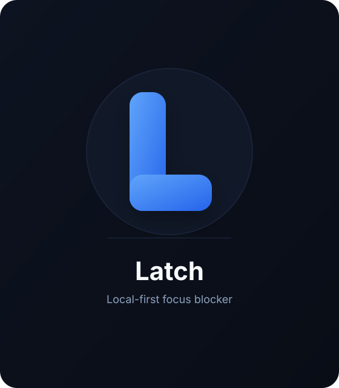
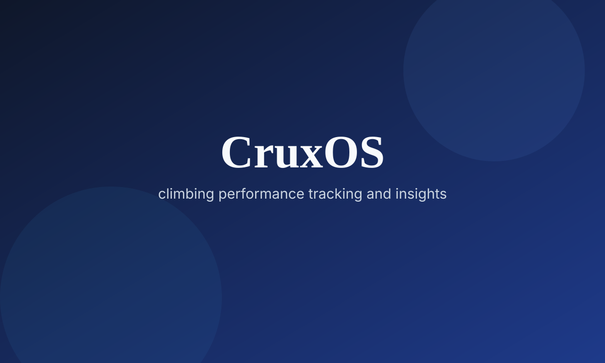

Electronic Arts
Software Developer Intern
Built AI-assisted testing and load-testing workflows for The Sims
- Analyzed Servo (LLM-powered automated game testing system) by evaluating model performance, reviewing codebase architecture, and providing technical recommendations for system optimization and soak testing workflows
- Debugged authentication failures in CI/CD load testing pipeline and improved test coverage, increasing infrastructure reliability from 35% to 100% success rate
- Integrated 10+ new game features into load testing frameworks, implementing automated test coverage and tracking performance metrics to ensure accurate testing under high-traffic conditions
Autodesk
Software Developer Intern
Built validation and repair systems for Fusion manufacturing data
- Built data validation and repair infrastructure for Fusion platform, establishing foundational framework to prevent missing manufacturing data across cloud workflows
- Developed an O(n) algorithm with intelligent concurrency controls to repair missing primary relationships, achieving 8x throughput through optimized parallel processing
- Designed and deployed API endpoints to automate data validation and repair operations in manufacturing workflows, reducing production failures through proactive issue detection
- Implemented permission validation and error handling protocols, eliminating existing security vulnerabilities for sensitive data
- Maintained 100% test coverage across all code changes using Mocha, Chai, and Sinon
Public Health Agency of Canada
Data Scientist Intern
Built literature-review and data pipelines for epidemiology research
- Developed LLM-powered literature review workflow for epidemiological research in collaboration with Imperial College London and WHO, building MDM infrastructure to enable standardized global health data access
- Conducted embedding model evaluation using Ollama to validate RAG system performance, confirming optimal model configuration and establishing baseline metrics for future improvements
- Designed automated academic paper collection pipeline using GPT-4o, developing proof-of-concept for scalable PDF retrieval and metadata extraction
Bedarra Corporation
Student Researcher
Researched RAG systems for obscure programming language support
- Researched and developed RAG systems to answer queries about obscure programming languages (Factor, K)
- Integrated LangChain orchestration to retrieve relevant code examples and documentation, providing context-aware responses for obscure language queries
Kongsberg Geospatial
Software Developer Intern
Built real-time geospatial demo apps and automation workflows
- Developed demo apps using TerraLens SDK as the sole developer on the Solutions Engineering team, successfully delivering custom solutions to major clients in aviation, defense, and government sectors
- Integrated LiDAR, WMTS, and S-57 data and optimized render pipeline to achieve consistent 60+ FPS with real-time object tracking, while implementing system monitoring (GPU, CPU, RAM) and modernizing Qt UI/UX
- Developed automated airspace classification framework, removing manual processing and standardizing data categorization
- Automated VFR and terrain data processing workflows, reducing aggregating time by more than 40%

Health Canada
Data Scientist Intern
Built chemical data and modeling pipelines for risk assessment
- Rebuilt organization-wide federated chemical search system using BS4 and lxml, implementing automated fault tolerance and rate limiting that increased query success rate by 20%
- Architected scalable web scraping framework using TDD practices and unittest, expanding accessible chemical data sources by 113% and achieving 100% test coverage
- Built random forest classifiers with pandas, NumPy, SciPy, and scikit-learn to accurately predict chemical toxicity
- Engineered automated knowledge graph pipeline using Neo4j, CoreNLP, and Stanza to extract semantic triples from medical literature, streamlining chemical assessment workflows
Department of National Defence
Software Developer Intern
Built a RAG chatbot for querying complex tax documentation
- Built chatbot implementing RAG architecture to enable intelligent querying across 20+ tax documents
- Developed NLP pipeline using NLTK, integrating tokenization, contextual analysis, and NER to enhance text understanding and information extraction accuracy
- Architected vector search system using FAISS and SQLite3, optimizing embedding storage and retrieval for queries
NAV CANADA
Software Developer Intern
Improved ATC tooling performance and deployment automation
- Optimized data management algorithm for internal data tool, resulting in a 60% decrease in storage utilization and 30% boost in automated data analysis performance
- Resolved multiple bugs in ATC software, achieving an overall 16% improvement in frame rate
- Automated network configurations with PowerShell, reducing manual work and setup time by more than 95%
Correctional Service Canada
Software Developer Intern
Improved accessibility and UX for a public victim services portal
- Improved web accessibility using the WET framework to ensure WCAG 2.1 Level AA compliance, enhancing UX for 100+ daily users in victim services application
- Developed ASP.NET solutions to resolve UI bugs and implement frontend improvements for victim info delivery application
Languages
Frameworks & Runtimes
AI / ML / Data
Databases & APIs
Tools & Practices
Carleton University
Bachelor of Computer Science (Honours) · 4.0/4.0 GPA
- Relevant coursework:
- Theory & Algorithms
- Algorithms I & II, Discrete Structures I & II, Graph Analytics
- Systems & Security
- Operating Systems, Systems Programming, Applied Cryptography
- Software Engineering
- Software Engineering, Object-Oriented Programming, Software Quality Assurance, Programming Paradigms, Data Structures, Human-Computer Interaction (UI/UX)
- Data & Applications
- Database Management Systems, Web Development, Mobile Multimedia
- Math & Stats
- Calculus I & II, Linear Algebra, Statistical Modeling
- Awards: President's Scholarship, Henry Marshall Tory Scholarship, Chalmers Jack MacKenzie Scholarship, Harry S. Southam Scholarship, Dean's Honour List (2022, 2023, 2024, 2025)
Latch
Local-first macOS focus blocker
Latch is a local-first macOS focus blocker built with Electron. It blocks distracting sites with a privileged helper, keeps blocklists on-device, and optionally uses a Chromium extension for a friendlier blocked-page experience.

- Local-first architecture: Kept blocklists and session state on-device with no account system or cloud dependency
- System-level enforcement: Paired the Electron app with a one-time privileged helper to block distracting sites across Chromium browsers
- Focus-session reliability: Supported timed sessions, always-on blocking, and crash recovery so active sessions survive interruptions
- Practical distribution: Packaged the desktop app, helper, Chromium extension bundle, and native messaging host into a single macOS release flow
CruxOS
Full-stack product for climbing performance decisions
CruxOS is a full-stack decision-support system for intermediate climbers, combining fast mobile session logging with a web app for analysis, reports, and weekly training guidance. It turns training and recovery data into deterministic, explainable insights that support better performance decisions.

- Full-stack system design: Structured CruxOS as a product, not just a tracker, with shared data flowing from fast session capture into deeper analysis and reporting workflows
- Mobile + web architecture: Separated low-friction logging on mobile from richer review and trend analysis on the web to support the full training loop
- Deterministic insight engine: Translated training, recovery, and workload signals into clear weekly recommendations instead of opaque black-box outputs
- Real-world usefulness: Built for intermediate climbers who need help deciding when to push, recover, or adjust training to improve performance
- 🏆 1st Place @ KuriusHacks — Led cross-functional team to build a reforestation platform
- Built tree species recommendation algorithm integrating various APIs to analyze user geodata for optimal planting
- Developed an interactive visualization dashboard using the Google Maps API to display real-time reforestation metrics and global environmental impact data